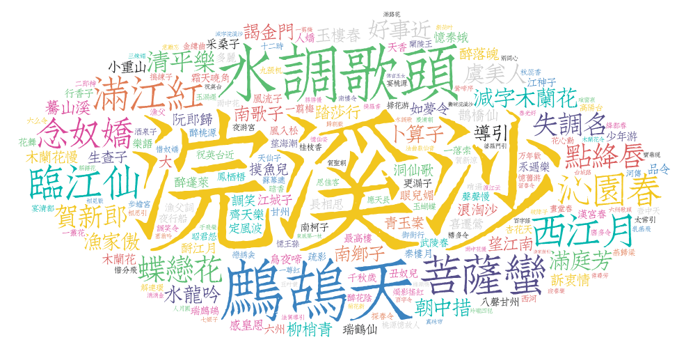

宋词词牌统计
探索最受欢迎的宋词词牌，感受不同词牌的独特韵律与情感表达
词牌分布

词牌占比

词牌名词云

探索最受欢迎的宋词词牌，感受不同词牌的独特韵律与情感表达
通过词云探索宋词中积极与消极情感意象的表达


宋词中"东风"出现的频率极高，常象征思念、无奈与感伤。
花开花落常被用来表达时光易逝、美好短暂的感慨。
"愁"、"恨"、"泪"等词频繁出现，体现了宋词的抒情特质。
通过大语言模型分析宋词情感倾向，探索宋代文人的情感世界
表达对生活的热爱、美好事物的向往以及乐观豁达的心境。常使用"喜""乐""欢"等词汇， 如苏轼"但愿人长久，千里共婵娟"的豁达情怀。
反映忧愁、哀伤、孤独等情绪。常与个人遭遇、社会动荡相关， 如李清照"寻寻觅觅，冷冷清清"的孤寂，或辛弃疾的家国之思。
表达较为客观，不带有明显情感倾向。多为对事物的描述或叙事， 如描绘自然景物、记录日常生活的词作，情感表达含蓄内敛。
分析方法： 基于deepseek大语言模型，对21,000首宋词进行语义分析，通过情感分类器将词作 划分为积极、消极和中性三类。
探索不同词牌的情感表达特点，如《水调歌头》多表达豁达情怀，《雨霖铃》则多抒发离愁别绪。
点击下方按钮，随机欣赏一首宋代经典词作
注释将在这里显示...
展示宋朝词人的活动地点分布